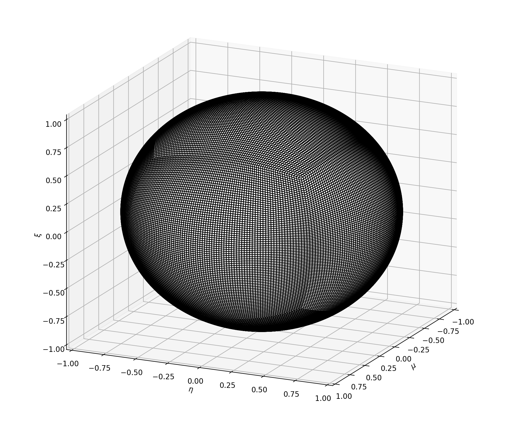
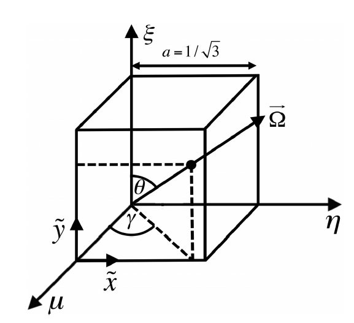
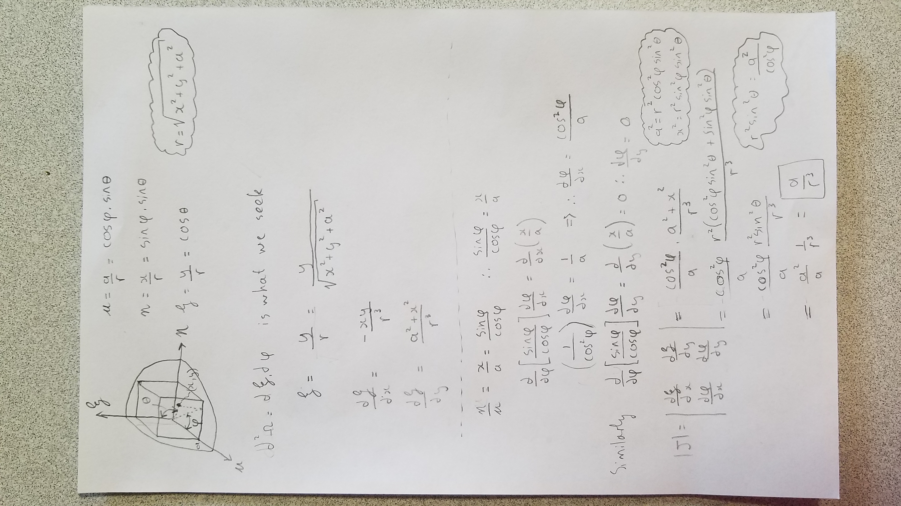

Simplified LDFESQ
This quadrature is a simplified implementation of the quadrature defined in the paper by Cheuk Lau and Marvin Adams: “Discrete Ordinates Quadratures Based on Linear and Quadratic Discontinuous Finite Elements over Spherical Quadrilaterals”, Nuclear Science and Engineering, 185:1, pages 36-52, 2017.

Synopsis
The initial refinement is generated for the octant where all the direction cosines are positive. We will call this the first octant.
A cube of side length \( a=\frac{1}{\sqrt{3}} \) is inscribed within the unit sphere and the origin planes. This cube has three faces that project onto the unit sphere in the first octant.

Each face of the cube can be described by a local coordinate system, \( \tilde{x} \), \( \tilde{y} \). In this reference frame each face is identically subdivided into an orthogonal grid. The generated grid-cells are called sub-squares.
A face and its associated sub-squares, in the local reference frame, can be rotated and translated onto the cube faces, for which we will call the reference frame the \( xyz \)-prime reference frame.
The sub-squares on each face project onto Spherical Quadrilaterals (SQs) on the unit sphere, a space which we shall refer to as the \( xyz \) reference frame. Or in the paper mu-eta-xi. 
Once the SQs are generated we have numerous choices on where to define quadrature points and associated shape functions. In the LDFE formulation we need 4 quadrature points and, for simplicity, we restrict the placement of these points in a certain manner. We form radii, in the xy-tilde reference, from the sub-square centroids to each corner of the sub-square (essentially producing sub-sub-squares) and then chose to place our quadrature points only on these points.
The placement of the quadrature points can then be projected to xyz after which the shape function coefficients can be determined.
The weight of each quadrature point is the spherical surface area integral of its shape function. This integral is done with a high order Guass-Legendre quadrature and a Jacobian \( \frac{a}{r^3} \).
The original Lau and Adams paper used a Multi-variate secant method to determine the placement of the quadrature points along the sub-sub-square radii.
Specific notes for the simplified version
Initial sub-division of the inscribed cube face
The orthogonal grid in the xy-tilde reference frame is dependent on a a diagonal spacing of grid points. The paper by Lau and Adams did not specify exactly how to generate this spacing but only stated that their spacing minimizes the max/avg and max/min ratio of projected SQ to 1.1 and 1.3 respectively. We found that the application of a weighting function, \( \alpha (\cos \beta \frac{\pi}{2} x - \cos \beta \frac{\pi}{2}) \) produces the optimal spacing. See the code for additional clarification.
Placement of the quadrature points
Instead of using a multi-variate secant method to place the quadrature points we found that placing the points on the 4 Gauss-Legendre points for a quadrilateral (\([\pm \frac{1}{\sqrt{3}},\pm \frac{1}{\sqrt{3}}]\)) still produced 4th order convergence and added a lot of speed to the algorithm.
Integration of basis functions
The determinant of the Jacobian can be hard to derive. It can be done in the two ways:
using a cross-product 
or in angle space .
Local refinement
The data structures employed allows the SQs to easily be refined in certain regions.